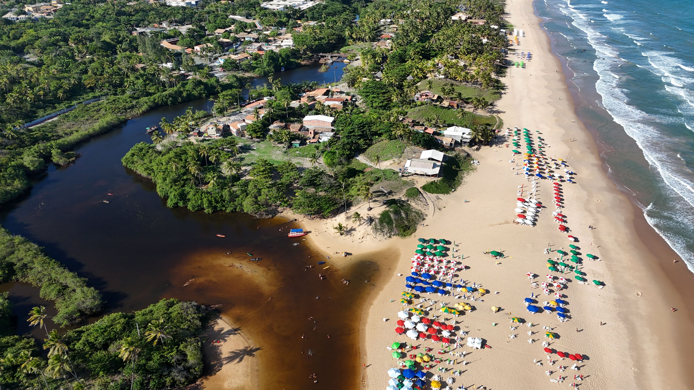

Rio de Janeiro
Descubra o Rio de Janeiro entre praias, trilhas e paisagens que misturam natureza e vida urbana. Explore lugares como Copacabana, Ipanema e a Floresta da Tijuca, aproveitando o clima descontraído e os cenários marcantes da cidade.


O Distrito Federal está localizado na região Centro-Oeste do Brasil e abriga Brasília, a capital do país. Brasília é conhecida por sua arquitetura moderna, especialmente pelas obras de Oscar Niemeyer, além de importantes edifícios políticos e monumentos, como a Catedral Metropolitana..


O Rio de Janeiro é uma das cidades mais conhecidas do Brasil, famosa por suas praias, paisagens naturais e pontos turísticos como o Cristo Redentor e o Pão de Açúcar. A cidade combina áreas urbanas com montanhas, florestas e litoral, formando uma paisagem marcante..

Os Lençóis Maranhenses, localizados no Maranhão, são um dos principais destinos naturais do Brasil, conhecidos por suas extensas dunas de areia branca entremeadas por lagoas de águas cristalinas, formadas principalmente durante o período chuvoso. O Parque Nacional dos Lençóis Maranhenses oferece uma paisagem única, atraindo turistas de diversas partes do mundo para apreciar suas belezas naturais..

A Praia de Santo André, em Santa Cruz Cabrália, Bahia, fica na Costa do Descobrimento e é conhecida pela extensa faixa de areia, coqueirais, águas tranquilas e pelo encontro do Rio João de Tiba com o mar. O acesso a partir de Santa Cruz Cabrália é feito por uma curta travessia de balsa pelo rio..
Pacotes exclusivos pelos destinos mais incríveis do Brasil
ver pacotesSomos um time pequeno que trabalha direto com guias e pousadas locais em cada destino. Isso significa grupos menores, preços mais justos pra quem recebe o viajante, e roteiros que mudam se o clima, a maré ou a vontade do grupo mudar.

Descubra o Rio de Janeiro entre praias, trilhas e paisagens que misturam natureza e vida urbana. Explore lugares como Copacabana, Ipanema e a Floresta da Tijuca, aproveitando o clima descontraído e os cenários marcantes da cidade.
Conheça Brasília e sua arquitetura única, planejada para representar uma nova fase da história brasileira. Visite seus principais monumentos, espaços culturais e áreas abertas, com opções para quem busca história, arquitetura e uma experiência diferente.

Viva Salvador através de suas praias, sabores, música e história. Caminhe pelo Pelourinho, conheça a Baía de Todos os Santos e aproveite a atmosfera única de uma cidade que reúne cultura, tradição e belas paisagens.

Pronto pra ir?